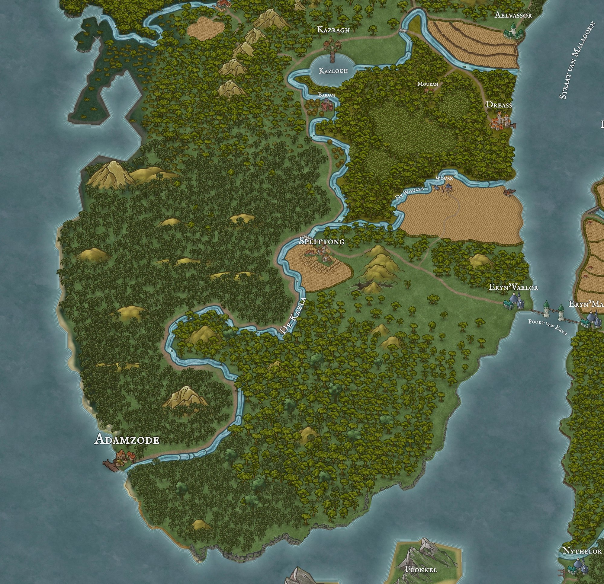

lore drops/reis naar kazlagh (kazla provincie)
Betreft:: Splittong, Bakum, Plaats/Dorp/Kazragh

Hoi allemaal, jullie tour operator hier. Hier een pamflet (dus een lore-drop vermomd als advertentie) over de provincie waar jullie nu door heen gaan reizen genaamd Kazla.
De Kazla provincie wordt gekenmerkt door de rivier De Kazla. Deze mond uit bij Adamzode en zoals jullie eerder gezien hebben is dit de enige rivier op Nachtvliet die een route heeft waar geen elven checkpoints zijn via de Wourka (bij het plaatsje Wourk), ideaal dus om over te smokkelen. Je vind er de volgende dorpen.**
Splittong
Dit pittoreske akkerbouwdorp telt zo’n 200 inwoners en ligt laag en vredig aan de kronkelende Kazla. Hier telen hardwerkende families gewassen voor de meest verfijnde markten van Adamzode en Eryn’Vaelor. Geniet van het uitzicht over uitgestrekte korenvelden en proef de pure geuren van versgemaaid graan!**
Wourk
In Wourk tref je zo'n 500 halflings en mensen die meesterlijke druïdische fruitgaarden onderhouden. Dankzij hun kennis van magische teeltmethoden groeit hier ’s werelds sappigste fruit, dat per boot in de Straat van Maladorn de wereld over reist. Laat je verleiden door de zoete nectar van appel, peer en bessen – een ware traktatie voor fijnproevers!
Bakum
Een knus dorpje van honderd zielen, waar orcs, half-orcs én mensen schouder aan schouder jagen en houthakken. Omgeven door dichte bossen hoor je het ritmisch geklop van bijlen en het geroep van trotse jagers. Bakum voorziet de hele streek – en vooral Kazragh – van eersteklas hout, perfect voor zowel scheepsbouw, ambachtelijke meubels als houten magische items.
Mourah
Verborgen in de mistige moerassen, produceert Mourah een uiterst kostbaar boomsap dat waterdicht maakt wat je maar wilt! De circa 200 inwoners, een bont gezelschap aan rassen, oogsten dit sap en verkopen het aan ambachtslieden en scheepswerven. Zonder haven, maar dankzij de smeekbede van handelaren toch onmisbaar voor ieders reis!
Dreass
Als industriële spil van de streek huisvest Dreass meer dan 1.500 inwoners en beheerst het de productie van waterdichte sappen. Gouverneur Gijsbert Jansen leidt deze bruisende stad aan de Straat van Maladorn, waar boten vol vaten sap vertrekken om kielen te dichten en masten te beschermen. Hier voel je de machinerie van vooruitgang en welvaart!
Kazragh
Met ruim 1.200 bewoners is Kazragh de majestueuze poort naar zee. Op de samenvloeiing van de Kazloch en de Kazla vind je bedrijvige houtzagerijen en exportroutes richting Aelvassor en Sterrenzeehaven. Voel de ziltige bries, bewonder de stapels scheepsboorden en stap aan boord van De Daybreak voor je grote avontuur!
Aelvassor
Prachtige elvenstad van duizend inwoners, gelegen aan de glinsterende oevers van de Straat van Maladorn. Onder leiding van Elyndriel Moongrove bruist Aelvassor van handel en cultuur: lichte bootjes vol exotische waar drijven aan, kunstenaars tentoonstellen hun werken op pleinen van wit marmer en magiërs versterken de handelswaar met subtiele betoveringen. Laat je meevoeren door de verfijnde sfeer en ontdek de wonderen van deze elfenparel!
Beleef zelf de charme, handel en magie van de Kazla provincie – daar waar elke dorp zijn eigen verhaal vertelt!